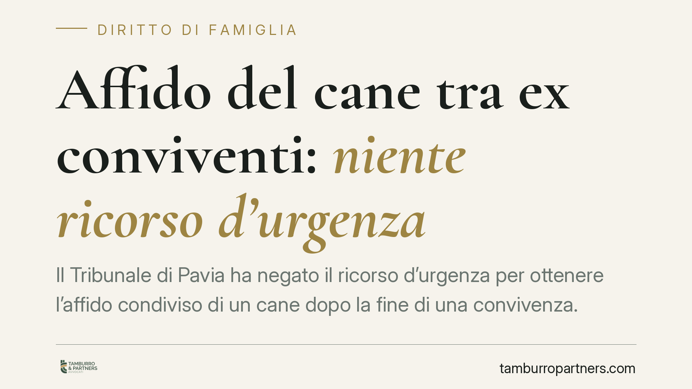

Affido del cane tra ex conviventi: niente ricorso d'urgenza
Il Tribunale di Pavia ha negato il ricorso d'urgenza per ottenere l'affido condiviso di un cane dopo la fine di una convivenza. Per i giudici l'animale resta un bene mobile, tutelabile solo con le azioni possessorie o il sequestro giudiziario. Una decisione che segna i confini degli strumenti utilizzabili quando la coppia si divide e il contendere è il cane di casa.

Il caso
Finita la convivenza, uno dei due ex partner chiede al giudice un provvedimento urgente: ottenere l'affido condiviso della cagnetta Lola e un calendario di visite, sul modello di quanto accade per i figli minori. Il Tribunale di Pavia, Sezione III, respinge la richiesta.
Il motivo non è la scarsa importanza del legame affettivo con l'animale, ma la natura dello strumento scelto. Il ricorso d'urgenza previsto dall'art. 700 del codice di procedura civile serve a proteggere un diritto già riconosciuto dall'ordinamento, quando c'è il rischio che un danno grave e irreparabile si verifichi nel tempo necessario a un giudizio ordinario. Qui, secondo i giudici, quel diritto non esiste.
Inquadramento normativo
Nel nostro ordinamento l'animale è tuttora un bene mobile. Lo stabiliscono gli articoli 812 e seguenti del codice civile: Lola, sul piano giuridico, è una cosa che può essere oggetto di proprietà e di possesso. Non esiste, allo stato, una norma che preveda l'"affido condiviso" di un animale tra ex conviventi, istituto riservato invece ai figli nella crisi familiare.
L'art. 700 c.p.c. ha carattere residuale e strumentale: tutela in via d'urgenza un diritto che poi dovrà essere accertato in un processo di merito. Se il diritto fatto valere — un "diritto di visita" sull'animale — non trova base nella legge, viene meno il presupposto stesso della tutela cautelare.
Il Tribunale indica allora le strade coerenti con la qualificazione dell'animale come bene. Chi ne lamenti la sottrazione può agire con le azioni possessorie (artt. 1168 e seguenti c.c., che proteggono chi aveva il possesso di una cosa) oppure chiedere il sequestro giudiziario ex art. 670 c.p.c., che consente di mettere sotto custodia un bene quando ne è controversa la proprietà o il possesso. Restano fuori, in questa lettura, gli strumenti pensati per le relazioni familiari in senso proprio.
Va segnalato che il quadro è in movimento: la Legge 6 giugno 2025 n. 82 è intervenuta sulla tutela degli animali, ma non ha introdotto una disciplina dell'affido condiviso tra ex partner. La sensibilità verso il benessere animale cresce; la categoria giuridica di riferimento, per ora, resta quella del bene mobile.
Implicazioni pratiche
Per chi si separa o scioglie una convivenza, il messaggio è concreto. Non si può ottenere dal giudice un calendario di visite al cane come si farebbe per un figlio. La contesa si sposta sul piano della titolarità del bene: chi è il proprietario? Chi ne aveva il possesso al momento della rottura?
Contano quindi le prove documentali. Il microchip e il libretto sanitario intestati, le ricevute delle spese veterinarie, i documenti di acquisto o di adozione diventano elementi decisivi per stabilire a chi "spetta" l'animale. L'attaccamento affettivo, da solo, non fonda un diritto azionabile in sede cautelare.
La scelta dello strumento processuale è il punto critico. Un ricorso impostato come "affido" rischia il rigetto a prescindere dal merito. L'azione va calibrata sulla tutela del possesso o della proprietà, con richieste e presupposti coerenti con quegli istituti.
Resta sempre percorribile la via dell'accordo. Nulla vieta agli ex partner di regolare privatamente la gestione dell'animale — chi lo tiene, come si ripartiscono le spese, se e come organizzare periodi di permanenza presso l'altro. Un patto scritto e sottoscritto previene il contenzioso ed è, nella maggior parte dei casi, la soluzione più rapida.
Cosa fare in concreto
- Verificate l'intestazione: controllate a chi risultano microchip, libretto sanitario e documenti di adozione o acquisto.
- Raccogliete le prove del possesso: conservate ricevute veterinarie, spese alimentari e ogni documento che attesti chi si occupava stabilmente dell'animale.
- Scegliete lo strumento corretto: valutate con un legale l'azione possessoria o il sequestro giudiziario, evitando ricorsi impostati come "affido".
- Privilegiate l'accordo scritto: formalizzate in un patto la gestione e il mantenimento dell'animale, dove la relazione tra gli ex lo consenta.
- Agite tempestivamente: le azioni possessorie hanno termini stretti per essere esercitate.
Disclaimer
Contributo informativo a cura di Tamburro & Partners - Avv. Giuseppe Tamburro. Non costituisce parere legale.
Ogni famiglia ha il suo equilibrio.
Separazione, divorzio, affidamento, assegno: se vuoi un confronto riservato su una specifica situazione, scrivi allo studio. Ti rispondiamo entro un giorno lavorativo.